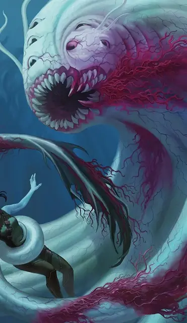

Аболет Аликсиан
Alyxian Aboleth
Большая Аберрация, законно-злая, именной НИП

Класс Доспеха 17 (природный доспех)
Хиты 135 (18к10 + 36)
Скорость 10 футов, плавая 30 футов
| мод | спас | ||
|---|---|---|---|
| СИЛ | 21 | +5 | +5 |
| ЛОВ | 9 | −1 | −1 |
| ТЕЛ | 15 | +2 | +6 |
| мод | спас | ||
|---|---|---|---|
| ИНТ | 18 | +4 | +8 |
| МДР | 18 | +4 | +8 |
| ХАР | 18 | +4 | +4 |
Навыки Восприятие +12, История +12
Чувства тёмное зрение 120 футов, пассивное Восприятие 22
Языки Глубинная речь, Телепатия 120 фт.
Опасность 12 (8400 опыта)
Бонус мастерства +4
Особенности
Амфибия. Аболет может дышать и воздухом и под водой.
Слизистое облако. Находясь под водой, аболет окружен слизью. Существа, которые касаются аболета или попадают по нему рукопашной атакой, находясь в пределах 5 футов от него, должны преуспеть в спасброске Силы Сл 14, иначе станут опутаны до конца следующего хода аболета.
Зондирующая телепатия. Если существо общается телепатически с аболетом, и аболет при этом видит это существо, он может узнать самые потаенные желания существа.
Действия
Мультиатака. Аболет совершает две атаки Щупальцем.
Щупальце. . Рукопашная атака оружием: +9 к попаданию, досягаемость 10 футов, одна цель. Попадание: 12 (2к6 + 5) дробящего урона плюс 3 (1к6) урона психической энергией.
Хвост. . Рукопашная атака оружием: +9 к попаданию, досягаемость 10 футов одна цель. Попадание: 14 (2к8 + 5) дробящего урона.
Бонусные действия
Порабощение (Перезарядка 4–6). Аболет нацеливается на одно существо, которое видит в пределах 30 футов от себя. Цель должна преуспеть в спасброске Мудрости Сл 14, иначе она станет магическим образом очарованной. Эффект оканчивается со смертью аболета, либо когда он перестанет быть на одном с целью плане. Очарованная цель находится под контролем аболета, и не может совершать реакции. Цель и аболет могут общаться телепатически на любой дистанции.
Каждый раз, когда очарованная цель получает урон, она может повторить спасбросок. В случае успеха эффект заканчивается. Не более чем один раз в 24 часа цель может также повторить спасбросок, но при этом она должна находиться как минимум в 1 миле от аболета.
Легендарные действия
Аболет может совершить 3 легендарных действия, выбирая из представленных ниже вариантов. За один раз можно использовать только одно легендарное действие, и только в конце хода другого существа. Аболет восстанавливает использованные легендарные действия в начале своего хода.
Удар хвостом. Аболет совершает одну атаку Хвостом.
Психическое истощение (стоит 2 действия). Одно очарованное аболетом существо получает 10 (3к6) урона психической энергией, и аболет восстанавливает хиты, равные урону, который получило существо.
Описание
Аболет Аликсиан – уникальное существо, которое верит, что несёт в своем теле душу Апотеона, заключенную в этой аберрации в качестве божественного наказания за его неспособность спасти мир во время Бедствия. Жилы руидия пронизывают тело аболета, а на его бледно-зеленой шкуре появилось второе лицо. Второе лицо - это мутация, которая никак не влияет на игровую статистику существа.